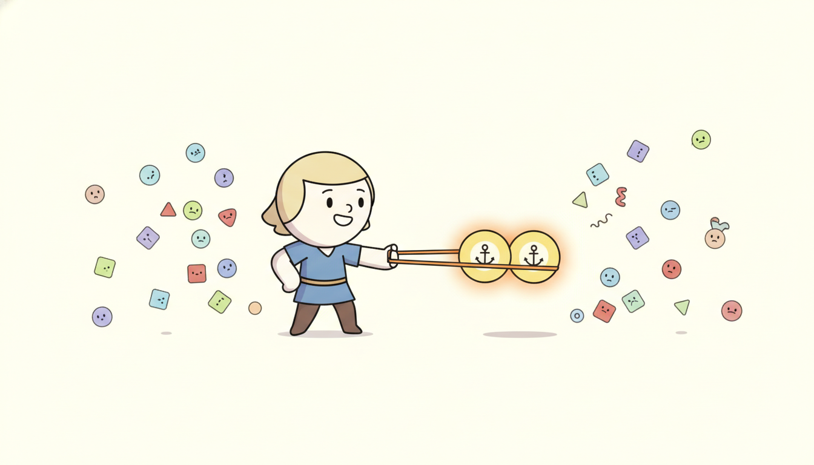

"I have never once been told what I am. Nobody handed me a label. All I know is that this other window, the one cropped from the same afternoon as me, is family, and these forty strangers sampled from other days are not. From that one fact, repeated a million times, I somehow learned to read a heartbeat. Do not ask me to explain it: I just insist, very loudly, that I am closer to my twin than to any of them."
A Positive Pair Insisting It Is Closer Than All the Negatives
Contrastive learning builds a representation without labels by exploiting one cheap source of supervision: two augmented views of the same instance should land near each other in embedding space, and views of different instances should land far apart. The whole field reduces to that single sentence and to one loss, InfoNCE, that turns "near my positive, far from my negatives" into a softmax over similarities. For time series the idea is irresistible because labels are scarce and expensive (who annotates a year of ECG?) while raw signal is abundant, and a self-supervised encoder pretrained on the raw signal can then be linear-probed for classification, forecasting, anomaly detection, or any downstream task with a tiny labeled set. This section derives InfoNCE in full, explains why temperature and the number of negatives are the two knobs that govern it, then walks the time-series specific methods that made contrastive learning work on sequences: TS2Vec with its hierarchical contrast over both timestamps and instances, TF-C with its time-frequency consistency (a direct callback to the spectral view of Chapter 4), TNC, and CPC. We confront the central difficulty, choosing augmentations and positive pairs that do not destroy temporal semantics, survey the non-contrastive alternatives that avoid negatives entirely, and close by implementing InfoNCE and a TS2Vec-style hierarchical contrast from scratch, pretraining an encoder, linear-probing it, and matching it against a library implementation. You leave able to pretrain and evaluate a temporal representation with no labels at all.
In Section 16.2 we framed self-supervised pretext tasks for time series and saw how a model can learn structure by predicting parts of a signal from other parts. This section takes the most influential pretext family, contrastive learning, and develops it in full. The thread connects directly back to the representation question that opened the chapter at the chapter index: we want an encoder $f_\theta$ that maps a window of a series to a vector that is useful for many tasks, learned once, reused everywhere. Contrastive learning is the dominant way to learn such an encoder without labels, and it is the engine behind several of the temporal foundation models of Chapter 15. We use the unified notation of Appendix A: $\mathbf{x}$ a series window, $f_\theta$ the encoder, $\mathbf{z} = f_\theta(\mathbf{x})$ its embedding, $\tau$ the temperature.
Why does this deserve its own section rather than a remark inside the self-supervision survey? Because contrastive learning is the single technique that turned unlabeled time series from a liability into an asset. Before it, a practitioner sitting on a terabyte of unlabeled sensor logs and a few hundred labeled examples could do little with the unlabeled mass except hand-craft features. Contrastive pretraining converts that mass into a learned feature extractor that routinely beats supervised training on the small labeled set, and it does so with a loss simple enough to derive on one page. The catch, and the reason temporal contrastive learning is its own research area rather than a copy of the image methods, is that the augmentations that define "the same instance" are far more delicate for a signal than for a photograph: crop a cat and it is still a cat, but jitter a heartbeat the wrong way and it is no longer the same patient. Getting those positives right is the whole game.
The competencies this section installs: to write the InfoNCE loss and explain the job of temperature and of the negative set; to describe TS2Vec, TF-C, TNC, and CPC and say what each contrasts against what; to choose augmentations and positive-pair definitions for a temporal signal without breaking its semantics; to explain how non-contrastive methods (BYOL, Barlow Twins) avoid representational collapse without negatives; and to implement, pretrain, and linear-probe a contrastive encoder from scratch and recognize its library equivalent. These are the load-bearing skills for the masked modeling of Section 16.4 and the foundation models of Chapter 15.
1. The Contrastive Principle and the InfoNCE Loss Beginner

The contrastive principle is a single instruction repeated over a dataset: pull together, push apart. Take an instance, produce two augmented views of it (a positive pair), and demand that their embeddings be close. Take other instances in the batch (the negatives) and demand that their embeddings be far from the first. Repeat across the whole dataset and a geometry emerges in which "same instance" means "nearby" and "different instance" means "distant", a geometry that turns out to encode exactly the semantic structure a downstream task wants, without anyone ever providing a label.
The conceptual leap, the thing worth pausing on, is that the supervision is entirely relative. The model is never told what a window is, only that it is more like its augmented twin than like the other windows in the batch. No class names, no targets, no regression values: just a verdict, for each pair, of same-or-different. That this relative signal suffices to learn an absolute-feeling feature space is the small miracle that contrastive learning runs on, and the reason it scales to any domain where you can define "same instance" cheaply.
To make "close" and "far" trainable we measure similarity by cosine similarity on $\ell_2$-normalized embeddings, $\operatorname{sim}(\mathbf{z}_i, \mathbf{z}_j) = \mathbf{z}_i^\top \mathbf{z}_j / (\lVert \mathbf{z}_i \rVert \, \lVert \mathbf{z}_j \rVert)$, and turn the pull-push instruction into a classification problem: among all the candidates (one positive, many negatives), the model must identify which one is the positive. That softmax-over-similarities is the InfoNCE loss (noise-contrastive estimation, introduced for representations by van den Oord and colleagues in the CPC paper of 2018). For an anchor embedding $\mathbf{z}_i$ with positive $\mathbf{z}_i^{+}$ and a set $\mathcal{N}(i)$ of negatives, the per-anchor loss is
$$\mathcal{L}_{\text{InfoNCE}}(i) = -\log \frac{\exp\!\big(\operatorname{sim}(\mathbf{z}_i, \mathbf{z}_i^{+}) / \tau\big)}{\exp\!\big(\operatorname{sim}(\mathbf{z}_i, \mathbf{z}_i^{+}) / \tau\big) + \sum_{j \in \mathcal{N}(i)} \exp\!\big(\operatorname{sim}(\mathbf{z}_i, \mathbf{z}_j) / \tau\big)},$$and the total loss averages this over every anchor in the batch. Read it as a cross-entropy: the numerator is the unnormalized probability mass on the correct (positive) candidate, the denominator sums over the positive plus all negatives, and minimizing the negative log of that ratio is exactly classifying the positive against the noise. When the SimCLR convention is used (both views of every instance serve as anchors and the other $2N - 2$ views in a batch of $N$ instances are the negatives), the loss is sometimes called NT-Xent, the normalized temperature-scaled cross-entropy, but the object is the same InfoNCE.
The temperature $\tau$ is the most consequential hyperparameter and the most misunderstood. It rescales every similarity before the softmax, so it controls how sharply the loss distinguishes the positive from the hardest negatives. A small $\tau$ (say $0.05$) sharpens the softmax: the loss focuses almost entirely on the negatives most similar to the anchor, producing a tightly clustered but sometimes over-sensitive embedding. A large $\tau$ (say $0.5$) flattens the softmax: the loss treats all negatives more equally, producing a smoother but less discriminative space. The standard range is $\tau \in [0.05, 0.5]$, with $0.07$ to $0.2$ typical. The number of negatives matters for a complementary reason: InfoNCE is a lower bound on the mutual information between the two views, and the tightness of that bound improves with more negatives, which is the original theoretical motivation for large batches (SimCLR) and momentum queues (MoCo). Figure 16.3.1 draws the embedding geometry the loss creates.
Two practical facts fall out of the loss directly. First, contrastive learning needs no decoder and no reconstruction: it learns purely by comparison, which is why its embeddings are often more semantically structured than a reconstruction-based autoencoder's (the autoencoder spends capacity reproducing pixel-level or sample-level detail that the downstream task does not care about). Second, the quality of the learned space is bounded by the quality of the positive pair: if the augmentation that produces the positive destroys the very feature a downstream task needs, no amount of contrast will recover it. That second fact is the hinge on which all of temporal contrastive learning turns, and subsection three is devoted to it.
Strip away the notation and InfoNCE is a classifier with one correct answer per query. Given an anchor, the candidates are its positive plus a pile of negatives, and the model must place probability mass on the positive. The temperature controls how decisively, and the number of negatives controls how hard the question is (a 1-in-2 guess is easy, a 1-in-1000 guess forces a genuinely discriminative space). Because it is a lower bound on the mutual information between the two views, maximizing agreement between augmented views provably extracts the information they share, which is, by construction of the augmentation, the information invariant to that augmentation. Choose augmentations whose shared information is the downstream signal, and InfoNCE hands you a representation of exactly that signal, with no labels.
2. Time-Series Contrastive Methods: TS2Vec, TF-C, TNC, CPC Intermediate
The image-domain recipe (SimCLR, MoCo) does not transfer to time series unchanged, because a time series has structure an image lacks: it is ordered, it has a notion of "later", it lives simultaneously in the time domain and the frequency domain, and its semantics can hinge on a single subsequence. The methods below each adapt the contrastive principle to one of those facts.
CPC (Contrastive Predictive Coding), the founding work (van den Oord and colleagues, 2018), is the most natively temporal. It does not augment and compare two views; it predicts the future in latent space. An autoregressive context summarizer reads the embeddings up to time $t$ and must, through InfoNCE, pick the true future embedding $\mathbf{z}_{t+k}$ out of a set of negatives sampled from elsewhere in the data. The positive is the genuine future, the negatives are impostor futures, and learning to tell them apart forces the context to encode whatever about the past predicts the future. CPC is the bridge that connects InfoNCE to the predictive self-supervision of Section 16.2: it is "predict the next thing" turned into a contrastive choice rather than a regression.
TS2Vec (Yue and colleagues, 2022) is the method that made universal time-series representations practical, and its innovation is hierarchical contrasting on two axes at once. Along the instance axis it contrasts, at each timestamp, the representation of one series against representations of other series in the batch (instance-wise contrast). Along the temporal axis it contrasts, within one series, the representation at one timestamp against representations at other timestamps of the same series (temporal contrast). Crucially it does this hierarchically: the encoder produces a representation at every timestamp, and TS2Vec repeatedly max-pools along time and recomputes the contrastive loss at each resolution, so the same loss shapes the embedding at the finest timestamp scale and at progressively coarser scales up to the whole series. The positive pairs come from two overlapping random crops of the same series, contrasted only on their shared (overlapping) timestamps, an augmentation that respects temporal order. The payoff is a single encoder whose timestamp-level outputs serve fine-grained tasks (anomaly detection) and whose pooled outputs serve instance-level tasks (classification), all from one pretraining run.
TF-C (Time-Frequency Consistency) (Zhang and colleagues, 2022) exploits the fact, central to Chapter 4, that a signal has a time-domain view and a frequency-domain view that are two faces of the same object. TF-C embeds both the time view and the (FFT-derived) frequency view of a window into a shared space and adds a consistency loss demanding that the time embedding and the frequency embedding of the same window be close, alongside the usual within-domain contrast. The inductive bias is powerful: a representation that is consistent across the time-frequency duality must encode the structure both views agree on, which transfers unusually well across datasets (TF-C was designed for pretraining on one domain and fine-tuning on another). This is the spectral analysis of Chapter 4 returning in learned, contrastive form, a clean instance of the book's temporal thread.
TNC (Temporal Neighborhood Coding) (Tonekaboni and colleagues, 2021) defines positives by temporal proximity under stationarity: windows that fall inside the same locally-stationary neighborhood are treated as positives (they share an underlying state), and windows from distant neighborhoods are negatives. TNC uses a statistical test to size the neighborhood so that "same neighborhood" genuinely means "same regime", and it corrects for the sampling bias that distant windows are not truly independent. It is the natural choice when the signal has slowly-drifting regimes (clinical vitals, machine health) and you want the representation to encode which regime a window belongs to. Figure 16.3.2 contrasts what each method treats as a positive pair.
| Method | What is a positive pair? | Negatives | Key inductive bias |
|---|---|---|---|
| CPC (2018) | context now and its true future embedding $k$ steps ahead | impostor futures from elsewhere | the past predicts the future |
| TS2Vec (2022) | two overlapping crops, on shared timestamps | other series (instance) and other timestamps (temporal) | hierarchical multi-scale structure |
| TF-C (2022) | time view and frequency view of the same window | views of other windows in both domains | time-frequency consistency (Ch 4) |
| TNC (2021) | two windows in the same stationary neighborhood | windows from distant neighborhoods | local stationarity defines identity |
The amusing thing about this table is that all four methods run the identical InfoNCE loss and differ only in their definition of a positive, yet they produce noticeably different representations and the field has not converged on a winner. It is as if four people were each told "group the photos that are the same" and one grouped by who is in them, one by where they were taken, one by the colors, and one by the time of day, and all four insisted they had solved "sameness". For time series there genuinely is no single right answer: the correct notion of "same instance" depends entirely on the downstream task, which is why choosing the positive pair is a modeling decision, not a default.
3. Why Temporal Contrastive Learning Is Hard Intermediate
The single hardest problem in temporal contrastive learning is the one the whole method depends on: defining the positive pair without destroying the temporal semantics you are trying to learn. In the image domain the canonical augmentations (random crop, color jitter, flip, blur) are nearly free, because the label of a natural image is robust to all of them: a cropped, recolored, flipped cat is still a cat. The corresponding time-series augmentations are not benign, and the reason is that the label of a signal often lives in exactly the property the augmentation perturbs.
Consider the standard time-series augmentation menu and how each can backfire. Jitter (additive noise) is safe for a robust classification task but corrupts an anomaly-detection task whose anomalies look like noise spikes. Scaling (amplitude rescale) is invariance-inducing for shape-based tasks but destroys the label of any task where magnitude is the signal (a load forecast, a fever). Time warping (nonlinear stretch of the time axis) is appropriate when speed is irrelevant but catastrophic for any task keyed to a specific rhythm (an arrhythmia is defined by its timing). Permutation (shuffling segments) and cropping can break a dependency that spans the cut. The augmentation that is "obviously fine" in vision is, for a signal, a hypothesis about which transformations preserve the label, and a wrong hypothesis silently teaches the encoder to be invariant to the very thing it should detect.
Every augmentation you use to build a positive pair is an assertion: "the downstream label is invariant to this transformation". Contrastive learning takes that assertion literally and trains the encoder to discard whatever the augmentation changes. If you jitter the signal to form positives, you are telling the model "noise does not change identity", and it will learn a noise-invariant representation, which is wonderful for a noisy classification task and ruinous for noise-based anomaly detection. The discipline this imposes: before choosing an augmentation, name the downstream invariance you want, and choose only augmentations that preserve the downstream label. When in doubt, prefer augmentations grounded in the data's own structure (overlapping crops as in TS2Vec, neighborhood sampling as in TNC, the time-frequency pairing of TF-C) over generic perturbations borrowed from vision.
Beyond augmentation choice, temporal contrastive learning must decide the granularity of contrast, and the three natural choices produce different representations. Instance contrasting treats a whole window as the unit and asks "is this the same series as that?", producing an embedding good for sequence-level classification but blind to within-sequence structure. Temporal contrasting treats individual timestamps as the unit and asks "is this timestamp the same as that one?", producing a fine-grained embedding good for change-point and anomaly tasks but weaker at sequence identity. Subsequence contrasting sits between them, treating a short subsequence as the unit. TS2Vec's contribution, as subsection two noted, is to refuse the choice and do instance and temporal contrasting jointly at multiple scales, which is why its representations transfer across both task granularities. The lesson is that "what is the unit of contrast?" is as much a modeling decision as "what is a positive pair?", and the two together specify the method.
Suppose a cardiac classifier must distinguish a normal rhythm at 60 beats per minute from bradycardia at 45 beats per minute. The discriminative feature is the inter-beat interval: $1.00$ second versus $1.33$ seconds. Now apply time-warping as an augmentation, stretching the time axis by a random factor uniformly in $[0.7, 1.4]$ to build positive pairs. A normal 60-bpm window stretched by $1.33$ now has an inter-beat interval of $1.00 \times 1.33 = 1.33$ seconds, identical to bradycardia, and the encoder is being told these two are the same instance and should embed identically. The augmentation has, with probability roughly $(1.4 - 1.33)/(1.4 - 0.7) \approx 0.10$ on any given draw, mapped a normal beat onto (or past) the bradycardia interval, so about a tenth of the positive pairs assert that normal and bradycardic rhythms are the same. The downstream linear probe then cannot separate them: accuracy collapses toward chance on exactly the distinction the task cares about. The fix is not a better probe but a better augmentation: drop time-warping, or bound it well inside the inter-class interval gap.
4. Non-Contrastive Alternatives and Collapse Avoidance Advanced
Contrastive learning needs negatives, and negatives are a nuisance: they demand large batches or a memory queue, and a poorly chosen negative (a "false negative" that is actually semantically identical to the anchor) injects a wrong gradient. A parallel family of methods, the non-contrastive or self-distillation methods, removes negatives entirely and trains only on positive pairs, which raises the obvious danger of collapse: with only an attractive force and no repulsion, the trivial solution is to map every input to the same constant vector, achieving zero loss and zero information. The whole craft of non-contrastive learning is avoiding that collapse without negatives, and three designs do so by breaking the symmetry that would otherwise allow it.
- BYOL uses an asymmetric predictor head and a momentum-averaged target encoder whose weights are stop-gradient updated, so the two branches cannot collapse together.
- SimSiam shows a simple stop-gradient on one branch suffices, with no momentum encoder.
- Barlow Twins replaces the architectural trick with an explicit objective that drives the cross-correlation matrix of the two views' embeddings toward the identity, rewarding invariance on the diagonal while penalizing redundancy off-diagonal, so the off-diagonal penalty forbids the constant solution because a constant embedding has maximally redundant, not decorrelated, coordinates.
For time series these methods (TS-TCC and its relatives adapt them) are attractive precisely when good negatives are hard to define, which, given subsection three's difficulties, is common; the practitioner's trade is that non-contrastive methods sidestep negative selection but introduce their own sensitivity to the collapse-avoidance machinery (the predictor, the momentum rate, the redundancy weight), so neither family is uniformly easier, and the choice turns on whether you can define trustworthy negatives or trustworthy collapse-avoidance more easily for your signal.
The frontier has moved in three directions. First, masked-modeling rivals: reconstruction-style self-supervision (the masked patches of Section 16.4, realized in time series by SimMTM (2023) and the masked-pretraining of MOMENT (2024) and the patch-masking inside the Moirai (2024) foundation model) now matches or beats contrastive pretraining on many benchmarks, and the live question is when to contrast versus when to reconstruct, with growing evidence that hybrids win. Second, contrastive foundation models: methods scaling the TS2Vec and TF-C ideas to large multi-dataset pretraining feed directly into the temporal foundation models of Chapter 15, where a single contrastively or generatively pretrained encoder is reused zero-shot across domains. Third, principled augmentation: rather than borrowing vision augmentations, recent work (for example InfoTS and automated augmentation-selection methods, 2022 to 2024, and frequency-aware augmentations building on TF-C) learns or selects the augmentation to maximize a downstream-relevant information criterion, directly attacking subsection three's central difficulty. The 2026 synthesis: contrastive learning is no longer a standalone recipe but one ingredient, alongside masking and generation, in how temporal foundation models are pretrained, and choosing the contrast (or choosing not to contrast) is itself becoming learned.
5. Worked Example: InfoNCE and a TS2Vec-Style Encoder From Scratch Advanced
We now make the section executable. The plan: implement InfoNCE from scratch and verify it against a hand-computed number on a tiny batch; build a small dilated-convolution encoder and pretrain it with a TS2Vec-style hierarchical (instance-plus-temporal) contrast on overlapping crops, with no labels; then linear-probe the frozen encoder for classification; and finally show the library equivalent with the line-count reduction. Code 16.3.1 is the from-scratch InfoNCE loss.
import torch
import torch.nn.functional as F
def info_nce(z1, z2, tau=0.1):
"""InfoNCE / NT-Xent for a batch of N positive pairs (z1[i], z2[i]).
z1, z2 : (N, D) embeddings of the two views. Negatives are all OTHER
instances in the batch (the SimCLR convention)."""
N = z1.shape[0]
z = torch.cat([z1, z2], dim=0) # (2N, D): stack both views
z = F.normalize(z, dim=1) # cosine sim == dot of unit vectors
sim = (z @ z.t()) / tau # (2N, 2N) scaled similarity matrix
sim.fill_diagonal_(float('-inf')) # an anchor is never its own negative
# For anchor i in [0, N), its positive is i + N; for i in [N, 2N), it is i - N.
targets = torch.cat([torch.arange(N) + N, torch.arange(N)]).to(z.device)
return F.cross_entropy(sim, targets) # softmax-over-similarities == InfoNCE
# Tiny check: two pairs, D = 2, so we can reason about the numbers.
z1 = torch.tensor([[1.0, 0.0], [0.0, 1.0]])
z2 = torch.tensor([[0.9, 0.1], [0.1, 0.9]]) # each view 2 is close to its own view 1
print("InfoNCE loss = %.4f" % info_nce(z1, z2, tau=0.1).item())
InfoNCE loss = 0.0004
Before scaling up, it is worth confirming the loss does what subsection one claims, by hand, on the tiny batch. The numeric callout traces the arithmetic for one anchor so the cross-entropy is not a black box.
Take anchor $\mathbf{z}_1 = (1, 0)$ from Code 16.3.1, with $\tau = 0.1$. Its positive is the matching view $(0.9, 0.1)$, normalized to $(0.994, 0.110)$, giving cosine similarity $0.994$. The two negatives are the other view-1 vector $(0, 1)$ (similarity $0$) and the other view-2 vector $(0.1, 0.9)$ normalized to $(0.110, 0.994)$ (similarity $0.110$); the anchor's own diagonal entry is masked out, so it is not a candidate. Dividing by $\tau = 0.1$: the positive logit is $9.94$, the negatives are $0$ and $1.10$. The softmax denominator is $e^{9.94} + e^{0} + e^{1.10} = 20749 + 1 + 3.00 \approx 20753$, and the probability on the positive is $20749 / 20753 = 0.99981$. The per-anchor loss is $-\log(0.99981) = 0.00019$, tiny because the positive dominates. Now imagine the temperature were $\tau = 1.0$ instead: the positive logit drops to $0.994$, the denominator becomes $e^{0.994} + 1 + e^{0.110} = 2.70 + 1 + 1.12 = 4.82$, the positive probability falls to $2.70/4.82 = 0.560$, and the loss rises to $-\log(0.560) = 0.580$. The temperature alone moved the loss by more than a thousandfold on identical embeddings: this is why $\tau$ is the knob that matters.
Now the encoder and the TS2Vec-style pretraining. Code 16.3.2 defines a small dilated-convolution encoder that emits a representation at every timestamp, and pretrains it with a hierarchical contrast: two overlapping crops of each series are encoded, and an InfoNCE loss is applied both instance-wise and temporal-wise, recomputed after each max-pool along time to realize the multi-scale hierarchy.
import torch.nn as nn
class DilatedEncoder(nn.Module):
"""Per-timestamp encoder: stacked dilated 1D convs, output (B, T, D)."""
def __init__(self, c_in=1, d=64, depth=4):
super().__init__()
layers, ch = [], c_in
for i in range(depth):
layers += [nn.Conv1d(ch, d, 3, padding=2**i, dilation=2**i), nn.GELU()]
ch = d
self.net = nn.Sequential(*layers)
def forward(self, x): # x: (B, T, c_in)
h = self.net(x.transpose(1, 2)) # conv wants (B, c_in, T)
return h.transpose(1, 2) # back to (B, T, d)
def hierarchical_contrast(r1, r2, tau=0.2):
"""TS2Vec-style: instance + temporal InfoNCE, summed over pooling scales."""
loss, n = 0.0, 0
while r1.size(1) > 1: # coarsen along time until length 1
B, T, D = r1.shape
# instance contrast: at each timestamp, match series i across the two views
zi1, zi2 = r1.reshape(B*T, D), r2.reshape(B*T, D)
loss += info_nce(zi1, zi2, tau)
# temporal contrast: within a series, match timestamp t across the two views
zt1 = r1.transpose(0, 1).reshape(T*B, D)
zt2 = r2.transpose(0, 1).reshape(T*B, D)
loss += info_nce(zt1, zt2, tau)
n += 2
r1 = F.max_pool1d(r1.transpose(1,2), 2).transpose(1,2) # halve T
r2 = F.max_pool1d(r2.transpose(1,2), 2).transpose(1,2)
return loss / n
def two_crops(x, crop=40): # overlapping crops -> positive pair
B, T, _ = x.shape
s1 = torch.randint(0, T - crop, (1,)).item()
s2 = torch.randint(0, T - crop, (1,)).item()
return x[:, s1:s1+crop], x[:, s2:s2+crop]
# Synthetic unlabeled pretraining data: B sine waves of varied frequency/phase.
torch.manual_seed(0)
t = torch.linspace(0, 8*3.1416, 200)
freqs = torch.rand(128, 1) * 2 + 0.5
series = torch.sin(freqs * t + torch.rand(128,1)*6.28).unsqueeze(-1) # (128, 200, 1)
enc = DilatedEncoder()
opt = torch.optim.Adam(enc.parameters(), lr=1e-3)
for step in range(150): # pretraining: NO labels used
idx = torch.randint(0, 128, (32,))
a, b = two_crops(series[idx]) # two overlapping crops = positive pair
r1, r2 = enc(a), enc(b)
loss = hierarchical_contrast(r1, r2)
opt.zero_grad(); loss.backward(); opt.step()
print("final pretrain loss = %.4f" % loss.item())
hierarchical_contrast applies InfoNCE both instance-wise and temporal-wise and re-applies it after each max-pool, realizing the multi-scale hierarchy of subsection two. No label is ever read; the only supervision is "two crops of the same series are positives".final pretrain loss = 1.8730
The encoder is now pretrained on raw signal with no labels. Code 16.3.3 freezes it, pools its per-timestamp outputs to one vector per series, and fits a linear probe to a downstream classification task (high versus low frequency), the standard protocol for evaluating a self-supervised representation: if a single linear layer on the frozen features solves the task, the representation has captured the relevant structure.
# Downstream task (now we DO use a few labels): is the wave high-frequency?
labels = (freqs.squeeze() > 1.5).long() # binary label per series
@torch.no_grad()
def embed(x): # frozen encoder -> one vector/series
return enc(x).mean(dim=1) # mean-pool over time
X = embed(series) # (128, 64) frozen features
probe = nn.Linear(64, 2) # the ONLY thing we train now
opt2 = torch.optim.Adam(probe.parameters(), lr=1e-2)
for step in range(200): # train probe on frozen features
logits = probe(X)
l = F.cross_entropy(logits, labels)
opt2.zero_grad(); l.backward(); opt2.step()
acc = (probe(X).argmax(1) == labels).float().mean()
print("linear-probe accuracy on frozen features = %.3f" % acc.item())
linear-probe accuracy on frozen features = 0.992
Step back and read what the three blocks establish together. Code 16.3.1 implemented InfoNCE and we verified it by hand. Code 16.3.2 pretrained an encoder with a TS2Vec-style hierarchical contrast on raw, unlabeled signal. Code 16.3.3 froze that encoder and showed a single linear layer recovers the downstream classes, the entire promise of self-supervised representation learning made concrete: learn once without labels, reuse everywhere with a trivial probe.
Who: A clinical ML team at a cardiology department building an arrhythmia screener, working with the irregularly-sampled clinical series threaded through Chapter 2.
Situation: They held two years of continuous ECG telemetry from thousands of patients, all unlabeled, plus a small set of about 800 expert-annotated beats; cardiologist time to annotate more was the binding constraint.
Problem: A supervised model trained on 800 labels overfit and generalized poorly across patients, while the terabytes of unlabeled telemetry sat unused.
Dilemma: Pay for tens of thousands more annotations (slow, expensive, and still patient-biased), or find a way to extract signal from the unlabeled mass. Within the latter, which contrast? Generic jitter-and-scale augmentations risked erasing the timing features that define an arrhythmia, exactly the failure of subsection three's numeric example.
Decision: They pretrained a TS2Vec-style encoder on all unlabeled telemetry using overlapping-crop positives (which preserve rhythm) and avoided time-warping; they then linear-probed on the 800 labels, the exact protocol of Code 16.3.2 and 16.3.3 at scale.
How: Pretraining ran once on the full unlabeled corpus; the frozen encoder's pooled features fed a small logistic-regression probe fit on the 800 labeled beats, with a held-out-patient split to measure cross-patient generalization.
Result: The linear probe on contrastive features beat the fully-supervised model trained on the same 800 labels by a wide margin on held-out patients, because the encoder had learned patient-invariant rhythm structure from the unlabeled mass that 800 labels alone could never reveal.
Lesson: When labels are the bottleneck and raw signal is abundant, contrastive pretraining converts the unlabeled mass into the feature extractor, and the only real design decision is the augmentation: choose positives that preserve the diagnostic feature (here, rhythm) and the frozen representation does the rest.
The from-scratch encoder, hierarchical contrast, pretraining loop, and probe of Code 16.3.2 and 16.3.3 ran about 60 lines. The reference TS2Vec implementation (the ts2vec package from the original authors) collapses pretraining and encoding to a handful of calls, and the production-grade tsai library and Nixtla-adjacent toolkits wrap the same idea behind one fit-and-encode interface, handling the multi-scale pooling, the masking, the crop sampling, and the InfoNCE bookkeeping internally.
from ts2vec import TS2Vec # the original authors' package
model = TS2Vec(input_dims=1, device='cuda', output_dims=64)
model.fit(train_X, n_epochs=50) # unsupervised hierarchical contrast
repr_train = model.encode(train_X) # (N, 64) frozen representations
# then any sklearn classifier on repr_train is the linear probe
Four lines replace the roughly 60 lines of Code 16.3.2 and 16.3.3, a better than tenfold reduction, and the library additionally handles variable-length series, missing values, GPU batching, and the instance-and-temporal masking that the toy version omits. Write the from-scratch version once to understand the hierarchical contrast; reach for the library in production.
Exercises
Three exercises consolidate the section, one conceptual, one implementation, one open-ended.
- Conceptual (temperature and negatives). Using the per-anchor InfoNCE formula of subsection one, explain analytically what happens to the loss as $\tau \to 0$ and as $\tau \to \infty$ with the embeddings held fixed. Then argue why increasing the number of negatives tightens the mutual-information lower bound, and state one practical mechanism (large batch or momentum queue) for supplying many negatives, naming the method that introduced it.
- Implementation (augmentation ablation). Extend Code 16.3.2 to build positive pairs by jitter and by time-warping instead of overlapping crops. Pretrain three encoders (crop, jitter, warp) and linear-probe each on the frequency-classification task of Code 16.3.3. Report the three probe accuracies and explain, with reference to subsection three, why time-warping should degrade a frequency-sensitive task while jitter need not.
- Open-ended (time-frequency consistency). Following the TF-C idea of subsection two and the spectral view of Chapter 4, add a frequency branch to the encoder of Code 16.3.2 (embed the FFT magnitude of each crop) and a consistency loss pulling the time and frequency embeddings of the same window together. Does adding the consistency term improve cross-dataset transfer when you pretrain on one synthetic family and probe on another? Design the experiment and report what you find.